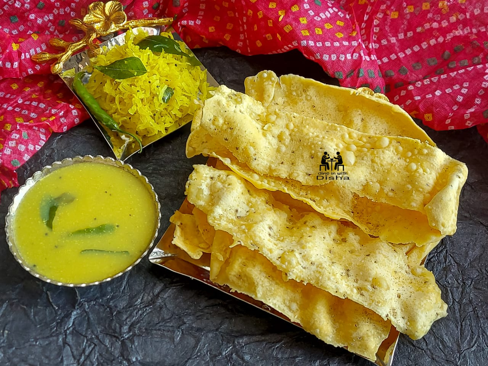

fafda
fafda recipes(ફાફડા બનાવવાની રીત )
ગુજરાતી ફાફડા રેસીપી એ પરંપરાગત ક્રન્ચી નાસ્તો છે જે ગુજરાતી ભોજનનો પર્યાય છે. ચણાના લોટ અને અન્ય મસાલાઓથી બનેલી, ગુજરાતી ફાફડા રેસીપી એ એક અનુકૂળ અને ઝડપી નાસ્તો વિકલ્પ છે જે દિવસના કોઈપણ સમયે લઈ શકાય છે અથવા અન્ય સૂકા નાસ્તા જેવા કે પફ્ડ રાઇસ સાથે મિક્સ કરી શકાય છે.

t
સામગ્રી
1 = 1 કપ ચણાનો લોટ (બેસન)
2 = 1/4 ચમચી ખાવાનો સોડા
3 = 1/4 ચમચી અજવાઈન (કેરમ સીડ્સ)
4 = /4 ચમચી આખા કાળા મરીના દાણા ,
5 = 1 ટેબલસ્પૂન તેલ
6 = મીઠું , સ્વાદ માટે
7 = 1 કપ પાણી , અથવા જરૂર મુજબ
8 = 1 ચપટી હિંગ (હિંગ)
બનાવવાની રીત
1. એક મોટા બાઉલમાં બધી સૂકી સામગ્રી ઉમેરીને ફાફડાની રેસીપી બનાવવાનું શરૂ કરો.
2. હવે બાઉલમાં ધીમે-ધીમે પાણી ઉમેરો અને સામગ્રીને સારી રીતે મિક્સ કરો, જ્યાં સુધી બધું નરમ કણક બની ન જાય.
3.એકવાર કણક તૈયાર થઈ જાય, તે હજુ પણ સ્ટીકી હોઈ શકે છે. તેથી તેમાં તેલ ઉમેરો અને તેને ફરીથી 2-3 મિનિટ વધુ મસળો.
4.એકવાર થઈ જાય પછી, કણકને 12-15 સમાન કદના ભાગોમાં વહેંચો અને તેના નાના બોલમાં બનાવો.
5.આ દરેક બોલને લાંબી અને પાતળી પટ્ટીઓમાં ફેરવો. ખાતરી કરો કે કણક તૂટી ન જાય અથવા રોલિંગ પિન પર ચોંટી ન જાય તે માટે રોલિંગ સ્ટ્રેચ પર કરવામાં આવે છે.
6.હવે મોટા તપેલામાં તેલ ગરમ કરો અને કણકની દરેક લાંબી પટ્ટીને કાળજીપૂર્વક તપેલીમાં સરકી દો.
7.ફાફડાના કણકની પટ્ટીઓને ધીમી આંચ પર 1-2 મિનિટ સુધી ડીપ ફ્રાય કરી, બંને બાજુ બ્રાઉન થાય ત્યાં સુધી ફેરવો. થઈ જાય એટલે તેને તેલમાંથી કાઢી લો અને ફાફડાને ગરમાગરમ સર્વ કરો.
" frameborder="0">